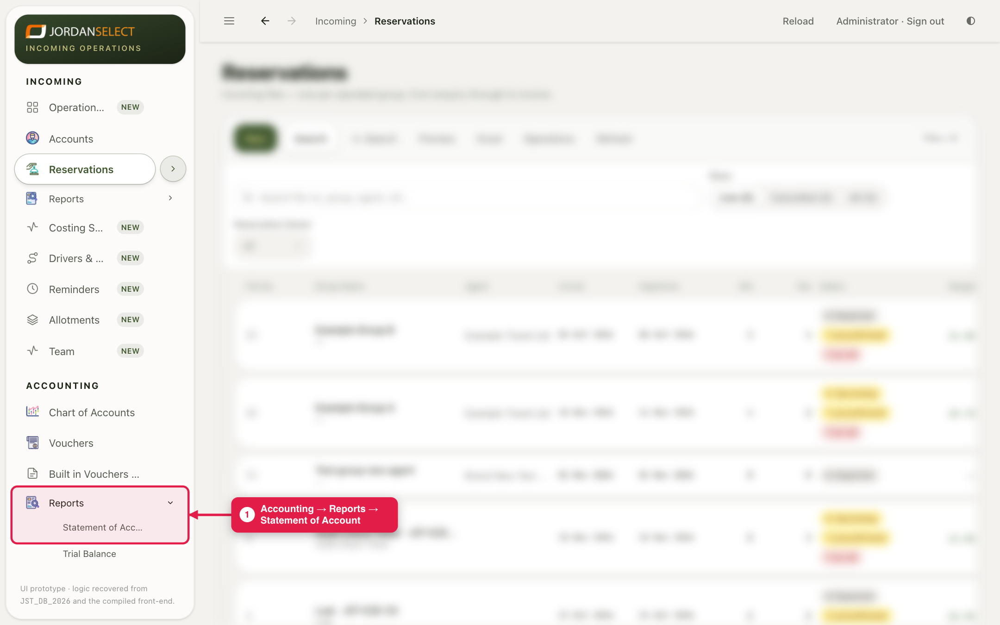
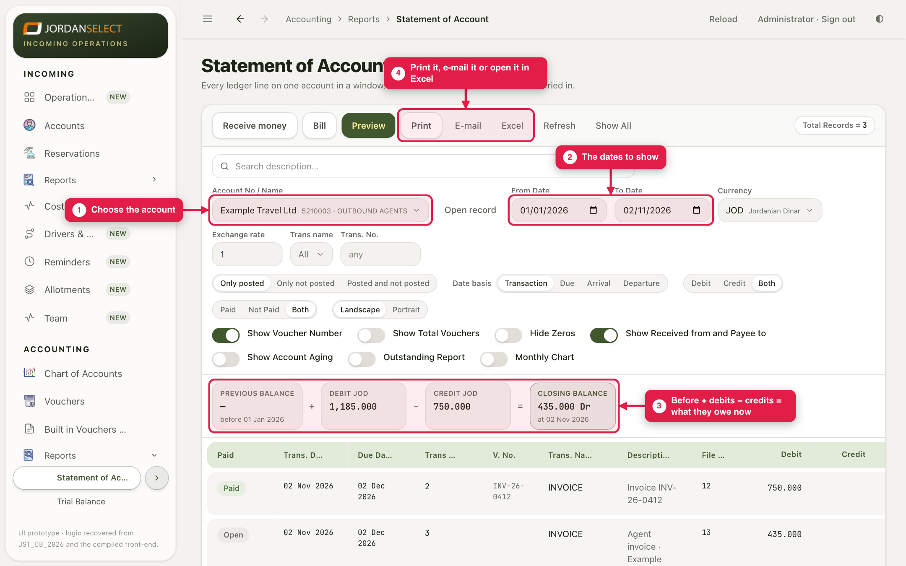
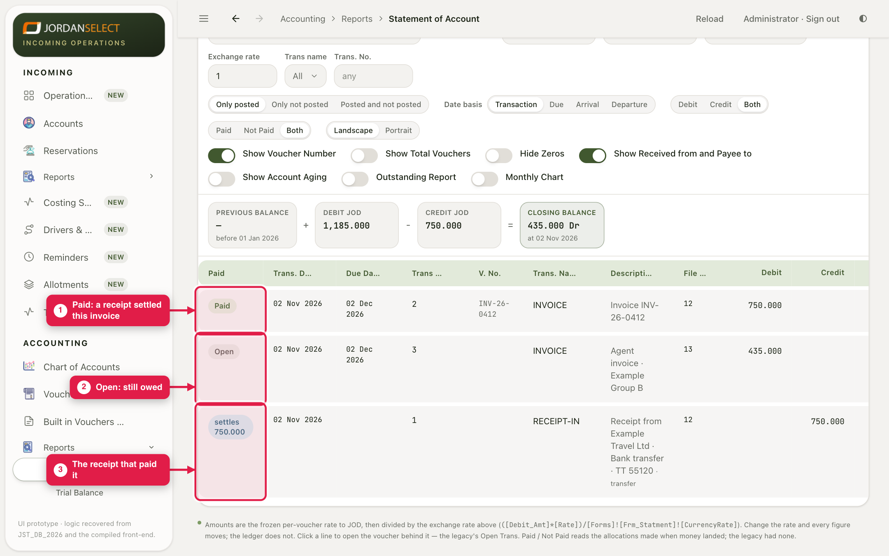

See what an agent or supplier owes, line by line, and print or e-mail it to them.



| Setting | Use it to |
|---|---|
| Only posted | Show only what is really in the books. Keep it on when you send a statement out. |
| Not Paid | Show only what is still open: a list to chase. |
| Show Account Aging | See how old the unpaid amounts are. |
| Show All | Every line, whatever the date. |
Print prints it, E-mail sends it, Excel downloads it. Receive money and Bill on this screen open guides 04 and 07 with the account already chosen.